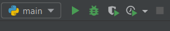
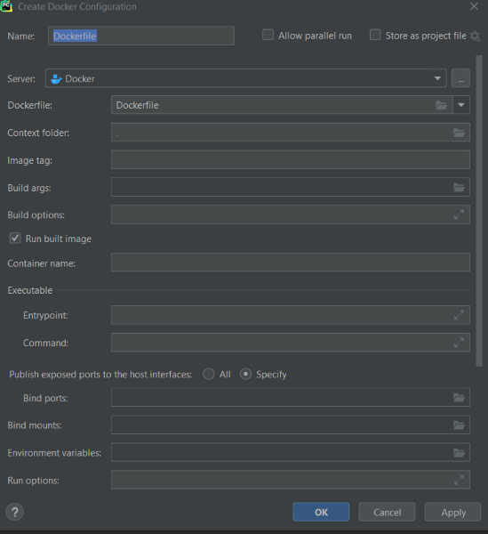
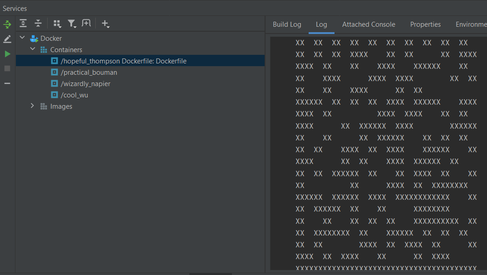

In this tutorial, we will learn how to connect Docker with PyCharm version 2020.3. Assuming Docker, Python, and PyCharm have all been installed on your computer, you can continue with the tutorial.
Go to File > Settings > Build, Execution, Deployment > Docker, you should see the following screen. In this instance, Docker was already set up, but if it isn't, click on the + sign in order to add Docker, and then the same screen will be shown as below.
If using Docker Windows Desktop, make sure that TCP socket is checked off and enter the URL tcp://localhost:2375 and click OK.
In the top left-hand corner, you can find a dropdown menu that says main, and you can click on Edit Configurations.
Navigate to Templates and then Docker.
Then click on Dockerfile.Click the + sign.
You should see the following screen below. You can add your Dockerfile in Dockerfile, and make sure that Run built image is checked off.
Go the the Navigation Bar and find Run. Then click on Run [Dockerfile name]
Under Services at the bottom of the page, you should see the Build Log running. Once the build log has been successfully deployed, you can click on the play button like below and check the Log tab to see the final output!
